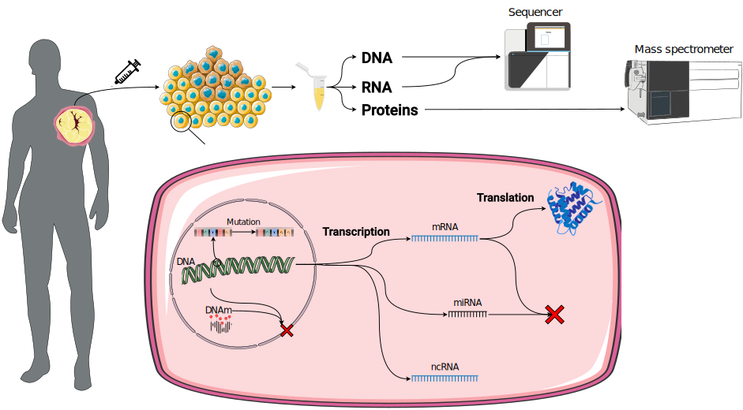
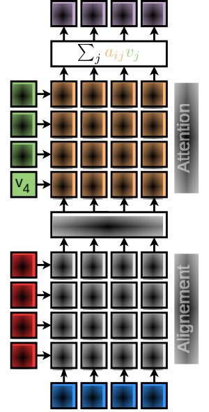
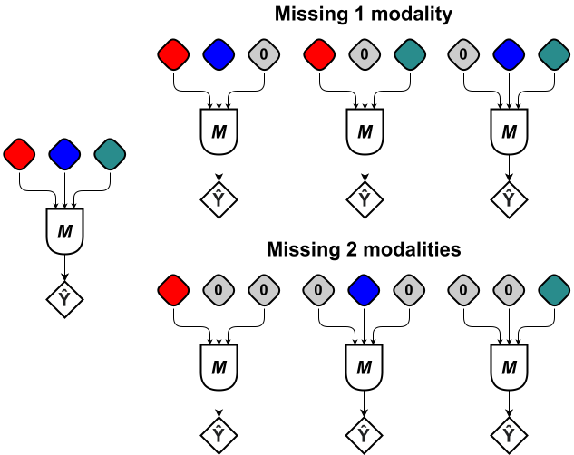
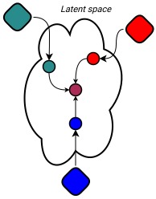
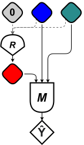

Developping and exploring the interest of deep learning approaches in the field of multi-omics data
Développer et explorer l’intérêt des approches de deep learning dans le domaine des données multi-omiques
2024-06-12
Towards a personalized medicine
Omics data
Precision medicine
Outline
Single omics
- State of the Art
- AttOmics
- Results
Multi Omics
- State of the Art
- CrossAttOmics
- Results
- CrossAttOmicsGate
Interpretability
- Counterfactuals
- GAN
- Results
Conclusions and Perspectives
Single omics
State of the art
Limits
Classical deep learning limits
- High number of parameters
- With limited number of examples
- Risk of overfitting
How to reduce the number of parameters ?
Gene expression impacts patient differently
- With classical DL, features interactions are learned during training and fixed for inference
How to compute interaction specific to each patient ?
(Self)-Attention mechanism
How to pick relevant information from input data \(X = [x_i]_{1 \leq i \leq L}\) ?
- Self-attention allows to capture the associated context of each input element by interacting with other elements \[ \operatorname{Attention}\left({\color{query}Q},{\color{key}K},{\color{value}V}\right) = \operatorname{softmax}\left(\frac{{\color{query}Q}{\color{key}K^T}}{\sqrt{d_k}}\right){\color{value}V} \] \(\color{query}Q = \left[q_i\right]_{1 \leq i \leq L}\) with \(\color{query}q_i = X_i \cdot W_q\), \(\color{key}K\) and \(\color{value}V\) are obtained similarly.
- Quadratic complexity (Space and Time)
How to apply self-attention to large large vectors ?
Group related features together and apply self-attention on it.

AttOmics Architecture
Grouping Strategies
- Random
- Clustering
- Knowledge:
- Gene ontology
- Cancer Hallmarks
\[ \begin{align} X_G &= \mathcal{T}\left(X\right) \\ &= \left[X_{g_1}, \cdots, X_{g_4}\right] \end{align} \]
Intra-group interactions
Gene grouping creates unwanted restrictions
Genes in group \(g_1\) cannot interact with genes from other groups
Restore group interactions with the Attention mechanism.
\[ X'_{g_i} = \operatorname{FCN}\left(X_{g_i}\right) \]
\[ X'_G = \left[X'_{g_1}, \cdots, X'_{g_4}\right] \]
Inter-groups interactions
New representation of each group taking into consideration features from other groups
\[ \begin{align} \color{query}q_i &= \color{query}X'_{g_i} \cdot W_q^h \\ \color{key}k_i &= \color{key}X'_{g_i} \cdot W_k^h \\ \color{value}v_i &=\color{value} X'_{g_i} \cdot W_v^h \end{align} \]
\[ \begin{align} Z &= \operatorname{MultiHeadAttention}\left(X'_G\right) \\ &= \operatorname{concat}\left(\left[h_1, \cdots, h_H \right]\right) \\ h_i &= \operatorname{Attention}\left({\color{query}Q},{\color{key}K},{\color{value}V}\right) \end{align} \]
:::
:::
::::
Results
Cancer Signature
- Cancer heatmaps are a mean of patient heatmaps with the same cancer
- Each square of the heatmap represents the attention weight between two different group learnt by the model
Across cancers different interactions are learnt
CESC cancer
Identified pathways:
- IL6 JAK STAT3 signaling
- Hedgehog signaling
- WNT singaling
Identified interactions:
- WNT and Hedgehog cross-talk involved in chemo-resistant cervical cancer
AttOmics Conclusions
- Proposed a grouping mechanism to scale the self-attention to omics data
- AttOmics has less parameters and achieves similar or better performances
- AttOmics has better performances with a limited training set
- Self-attention: capture patient specific feature interactions
Omics were analyzed individually but a phenotype results from their interaction
Combine the different omics in a single model.
Multi omics
Multimodal AI
State of the art
Attention as an integration strategy
Attention mechansim can capture interaction between two vectors
Early Fusion
- High dimensionnality
- Attention complexity: \(\mathcal{O}(n^2)\)
Intermediate Fusion
\[\begin{align} Z_{\beta \rightarrow \alpha} &= \operatorname{CrossAtt}_{\beta \rightarrow \alpha}\left(X_{\alpha}, X_{\beta} \right) \\ &= \operatorname{Attention}\left(Q_{\alpha},K_{\beta},V_{\beta} \right) \end{align}\]
Consider all modality pairs: \(n^2\) pairs to consider
Only consider pairs known to interact
CrossAttOmics

Omics combination

Identifying important interactions
Layer-wise relevance propagation
Robustness to missing modalities



Multi-omics conclusions
- Harness cross-attention to build a multimodal representation explicitly considering interactions between modalities.
- Using only two or three non-protein omics combination, achieve similar accuracy to what is obtained by training only on proteins.
- Modality dropout increases robustness to missing modalities.
- Data-driven strategy to identify important interactions: CrossAttOmicsGate.
Patient can be diagnosed efficiently but what are the disease drivers? How to treat the patient?
From predictions to actions
Motivation
What are the important genes or potential biomarkers?
Whate are the actions that could lead a patient to a healthier state?
Counterfactuals
Counterfactuals
How would \(x\) change if \(y\) had been \(y^{\prime}\)?
\(y\) was predicted because input \(x\) had values \(\left(x_{1}, x_{2}, x_{3}, \ldots\right)\). If \(x\) instead had values \(x_{1}^{\prime}\) and \(x_{2}^{\prime}\) while other variables, \(\left(x_{3}, \ldots\right)\), had remain the same, \(y^{\prime}\) would have been predicted.
(Wachter et al., 2017)
\[ \operatorname*{argmin}_{x^{\text{CF}}} \mathcal{L}\left(g\left(x^{\text{CF}}\right), y^{\text{CF}} \right) + d\left(x^{\text{CF}}, x\right) \]
Is it sufficient to have realistic and actionnable points?
Counterfactuals properties
Data manifold closeness = respect the original data distribution
GANs captures the data distribution (Goodfellow et al., 2014)
Generating counterfactuals with a GAN
\[ \mathcal{L} = {\color{manifold}\mathbb{E}_{x\sim p_{d}}\left[ D\left(x\right)\right] - \mathbb{E}_{x^{\text{CF}}\sim p_{g}}\left[ D\left(x^{\text{CF}}\right)\right] + \lambda \mathbb{E}_{\tilde{x}\sim p_{g}}\left[ {\left( {\left\|\nabla_{\tilde{x}}D\left(\tilde{x}\right) \right\|}_{2} -1 \right)}^{2}\right]} \\ + {\color{cf}\mathcal{L}_{\operatorname{Cl}} + \mathcal{L}_{\operatorname{Cl}_{T}}} + {\color{sparsity}\mathcal{L}_{\text{Reg}}\left(G\right)} \]
Preliminary Results
- Counterfactual Accuracy (\(y^{\text{CF}}\) ✅︎ and \(y_{\text{Tissue}}\) ✅︎): \(\mathcal{A}_{\text{CF}} = 0.96\)
- Distance to the original point: \(L_1\), \(L_2\), \(L_{\infty}\)
- Sparsity: \(L_0 = \sum_i \left|x_i \right|^{0}\) with \(\left|0\right|^0 = 0\)
- kNN Accuracy: \(\mathcal{A}_{\text{kNN}} = \frac{1}{k} = \sum_{i=1}^{k} \mathbb{1}\left(y^{\text{CF}}, y_{i}^{\text{kNN}}\right)\)
| \(L_1\) | 2440 |
| \(L_2\) | 30 |
| \(L_{\infty}\) | 1 |
| \(L_0\) | 0.52 |
| \(\mathcal{A}_{\text{kNN}}\) | 0 |
| \(\mathcal{A}_{\text{Oracle}}\) | 0.94 |
Preliminary Results
Preliminary Results
GDA: gene-disease association from DisGenet / COSMIC: Catalogue of somatic mutations in cancer
Conclusions and Perspectives
Conclusions
- AttOmics: Applied self-attention mechanism to omics profile tp capture patient-specific interactions. Self-attention was applied to groups of features which allowed the addition of knowledge in the groups.
- CrossAttOmics: Integrate multi-omics data based on the known regulatory interactions between modalities and the cross-attention.
- CrossAttOmicsGate: Let the network score each interaction with a gating mechanism
- Counterfactual Generation: Find the perturbation on the molecular profile that will change the prediction from a disease state to a health
Perspectives: Scalar Attention
- Groups are an architectural constraints
- Directly consider feature interactions
How to compute attention between scalar values ?
\[ A_{ij} = \operatorname{softmin}\left(\left|Q_{i} - K_{j} \right| \right) \]
Efficient implementation with Triton.
Perspectives: Knowledge
- Biolgically-informed architectures are common when applying deep learning to biological problems as they provide a strong inductive bias.
Knowledge is incomplete or may contains errors. How to handle this ?
Knowledge is iteratively constructed and omics measurement represent a mean of all occuring pathwyays.
What to do about unnannotated features ?
Thank you
Appendix
CrossAttOmicsGate: a data-driven approach
CrossAttOmicsGate results
| Model | Accuracy | Precision | Recall | F1 |
|---|---|---|---|---|
| No Gate | 0.980 ± 0.001 | 0.982 ± 0.002 | 0.979 ± 0.002 | 0.980 ± 0.002 |
| Gate | 0.987 ± 0.001 | 0.989 ± 0.001 | 0.987 ± 0.001 | 0.987 ± 0.001 |
Adversarial training of \(\operatorname{Cl}\)
- An adversarial example, \(x^{\star} = x + \delta\), is an instance \(x\) with the addition of a small perturbation \(\delta\) that is incorrectly predicted by a model
- They are obtained by solving \(\max_{\delta \in \Delta} \mathcal{L}\left(\operatorname{Cl}\left(x + \delta\right), y\right)\) with gradient ascent. (ex: projected gradient ascent)
- Adversarial training: \[ \min_{\operatorname{Cl}} \mathbb{E}_{(x,y)}\left[\max_{\delta^{\star} \in \Delta} \mathcal{L}_{\text{CE}}\left(\operatorname{Cl}\left(x+\delta^{\star}\right), y \right) \right] \]
PhD defense - Aurélien BEAUDE